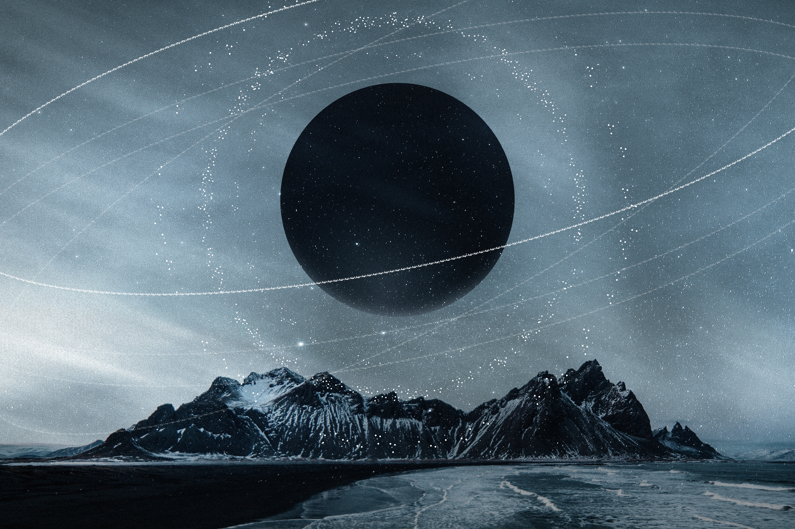

Informasi Diri

| Nama | : | Petrus Alehandro Duli Kayan |
| Umur | : | 20 Tahun |
| Asal | : | Jayapura, Papua |
| Alamat | : | Jln.Krodan, Maguwoharjo, Depok, Kab.Sleman |
| Pekerjaan | : | Mahasiswa |
Mahasiswa Informatika

Halloooo! Selamat datang di website saya
| Nama | : | Petrus Alehandro Duli Kayan |
| Umur | : | 20 Tahun |
| Asal | : | Jayapura, Papua |
| Alamat | : | Jln.Krodan, Maguwoharjo, Depok, Kab.Sleman |
| Pekerjaan | : | Mahasiswa |
Saya adalah seorang Mahasiswa yang sedang menempuh pendidikan di Universitas Sanata Dharma. Saya seorang anak laki - laki pertama atau sulung, saya gemar sekali bermain futsal ataupun bola jalanan dan juga saya sangat senang mengikuti beladiri seperti Muaythai/MMA. Saya juga gemar bermain game seperti Mobile Legends, selain itu saya juga suka mengeksplor alam seperti Gunung ataupun Pantai tetapi saya lebih senang ke pantai karena melihat laut yang begitu luas dan juga satwa laut yang begitu beragam dan di laut juga kita bisa berenang